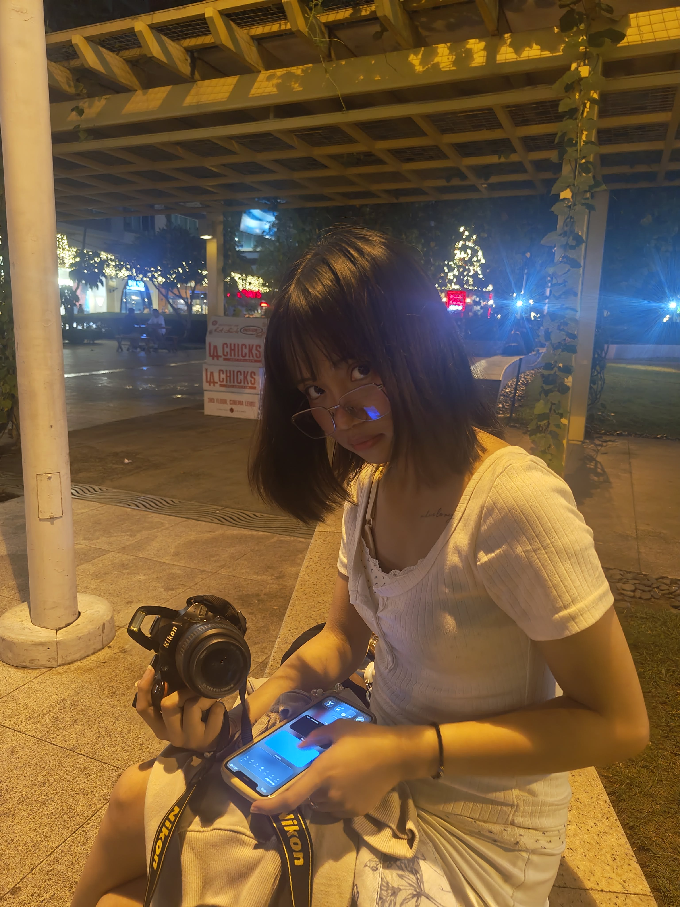

Just a little something for you.
There's something I'd like you to read.
A little question for you
You once said that you can read people, right? So, can you read me? Can you understand my actions, especially when it comes to you?
Your response will be sent to my private Google Sheet. Please don't share anything too personal.
One more thing...
There's something I've been wanting to tell you.

Something from my heart
I made this little something for you because I wanted to show how special you are to me. I don't know what gonna happen in the future, but I know that I genuinely enjoy getting to know you. I really appreciate you presence, your little gestures and the moments we share. I just want to be honest about how I feel. I really like you liz and I'd really love to get to know you even more. I know it might be too early but I believe confessing sooner is better than waiting for the right time. Even there's no right time cause we're the one who decide when the right time is You're actually my childhood crush. I know that might be hard to believe since we're just a kids back then, but I want you to know my feelings were genuine. Even though we were young to understand what love really meant. I really like you liz. This is something I've wanted to tell you earlier, but I was shy to say it. And I decided to create this little website to finally express my feelings for you. No pressure, pandak. I just wanted you to know.
Whatever your answer may be, I'm glad I finally told you.
You don't have to rush. Just take your time. 🌻